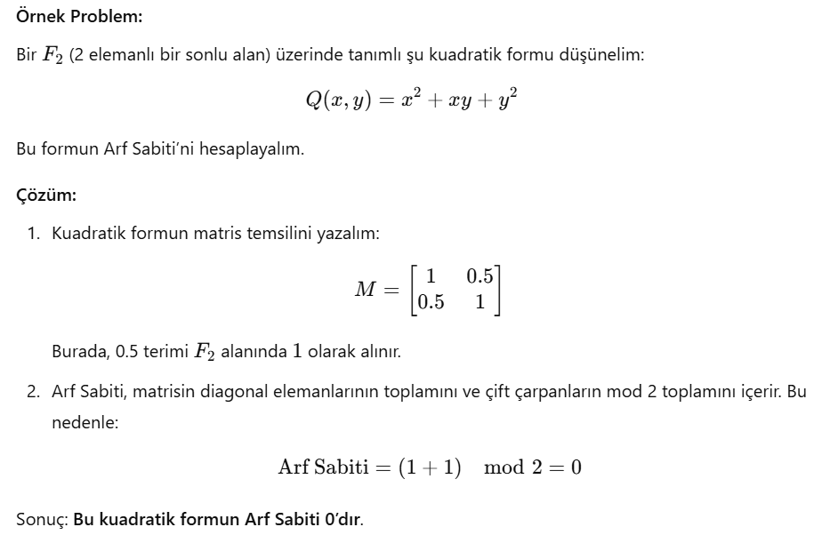

Arf Sabiti

Arf Sabiti, Cahit Arf tarafından tanımlanan ve kuadratik formların sınıflandırılmasında kullanılan bir matematiksel terimdir. Kuadratik formlar, birden fazla değişkene bağlı olarak ikinci dereceden ifadelerin analizini içerir.
Arf Sabiti, kuadratik form üzerindeki bir izometrik sınıflandırma aracıdır ve kuadratik formların indirgenmesinde temel bir rol oynar. Bu sabit, bir kuadratik formun modüler bir yüzey üzerinde sınıfını belirlemek için kullanılır. Özellikle sonlu alanlar üzerinde tanımlanan kuadratik formların incelenmesinde, ve bu formun geometrik veya cebirsel özelliklerini karakterize etmek için kullanılır.
Arf Sabiti Kullanım Alanları
- Cebirsel Geometri: Kuadratik yüzeylerin ve modüler formların sınıflandırılmasında kullanılır.
- Sonlu Alanlar: Sonlu alanlar üzerinde tanımlanan kuadratik formların sınıflandırılması için kritik bir parametredir.
- Kriptografi: Modern şifreleme algoritmalarında sonlu alan teorisi ile ilişkilidir.
- Modüler Temsil: Kuadratik modüllerin sınıflandırılması gibi soyut matematiksel konularda kullanılır.
Arf Sabiti Örneği
Aşağıdaki resimde, Arf Sabiti'ne dair bir örnek hesaplama bulunmaktadır:
10 TL'nin Arkasındaki Portre
Türkiye Cumhuriyeti, bilim insanları ve sanatçıları onurlandırmak için para tasarımlarında onlara yer vererek bilim ve kültüre verdiği önemi göstermektedir. Cahit Arf'in portresi de 10 TL'nin arkasında yer alır. Arf'in portresi, onun bilime yaptığı katkıları onurlandırmak ve yeni nesillere ilham vermek amacıyla seçilmiştir. Matematik, mühendislik ve fizik gibi alanlarda eğitim alan birçok kişi, onun adıyla karşılaşarak mirasını halen yaşatıyor.

| "Matematiği ezberlemeyin, kendiniz anlayın ve yapın." - Cahit Arf |